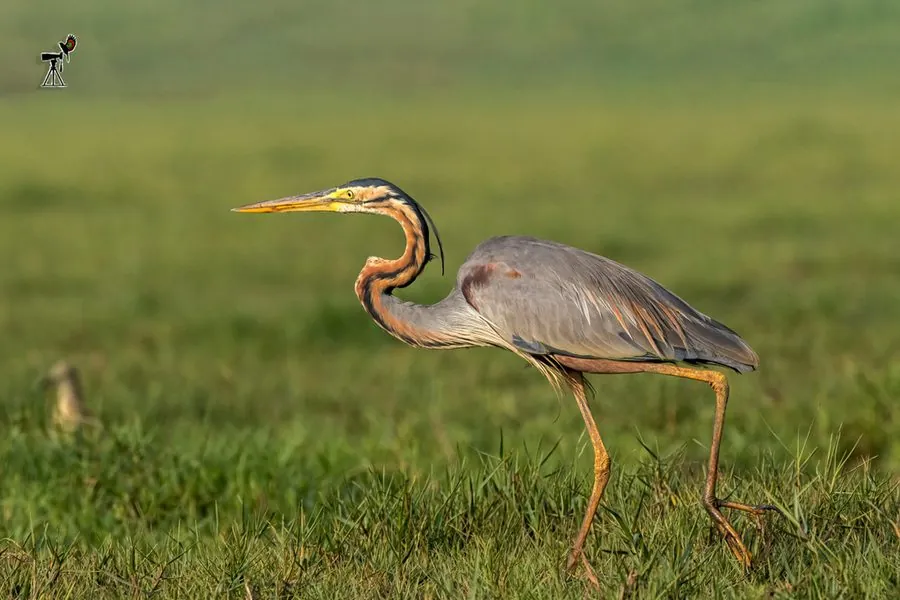

鸟类 · 动物界
草鹭 Ardea purpurea

体色暗紫栗红、颈侧有黑色纵纹的中型鹭类，喜在芦苇荡中隐蔽穿行，受惊时伸直颈部伪装成芦苇，分布欧亚与非洲湿地。
- 分类
- 门脊索动物门纲鸟纲目鹈形目科鹭科属鹭属
- 栖息环境
- 芦苇沼泽、湖泊与河漫滩边缘、池塘与灌溉渠旁的高草丛
- 地理分布
- 欧洲南部、非洲、南亚至东亚，包括中国东部与南部湿地
- 保护级别
- IUCN 无危（LC）；中国列为有重要生态、科学、社会价值的陆生野生动物
物种志
草鹭体长约 78–90 厘米，翼展 1.2–1.5 米，体重 0.5–1.2 千克。体色以暗栗红和紫灰为主：头顶蓝黑并具羽冠，颈细长呈黄褐色，颈侧有数道黑色纵纹，背部灰褐，肩羽栗红，翼羽深灰，腹部暗栗色。喙细长呈黄褐色，腿黄绿色。与体型更大的苍鹭相比，它更纤细、色彩更深，颈部纵纹是重要识别特征。
草鹭栖息于芦苇沼泽、湖泊边缘、水塘与河漫滩，偏爱高而密的芦苇和水草，常单独或成小群隐藏在苇丛中，行动缓慢、善于伪装。捕食时静立浅水，捕食鱼、蛙、昆虫、螺和小型哺乳动物。受惊起飞时颈部伸直、双腿后拖，飞行显得笨重。繁殖期在芦苇丛中筑巢，常与苍鹭、白鹭混群，每窝产 3–5 枚蓝绿色卵，双亲孵卵约 25–27 天。湿地排干与芦苇收割使其栖息地减少，部分地区种群下降。
形态与习性
- 体长约 78–90 cm，翼展 1.2–1.5 m
- 体重约 0.5–1.2 kg
- 食性鱼、蛙、昆虫、螺、虾与小型哺乳动物
- 繁殖芦苇丛中筑巢，每窝 3–5 枚卵，孵卵约 25–27 天
- 识别特征颈侧数道黑色纵纹，体色暗栗红与紫灰相间
- 隐蔽方式受惊时伸直颈部，伪装成芦苇茎秆
- 寿命野外约 12 年，最长记录超过 20 年
趣味知识
- 草鹭受惊时会把脖子伸得笔直、喙朝天，混在芦苇里几乎看不出来。
- 它颈侧那几道黑色纵纹，是区别于苍鹭和大白鹭的关键特征。
- 草鹭常在芦苇丛中与苍鹭混群繁殖，巢就架在苇秆之间。